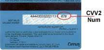

A CVV2 (Card Verification Value 2) code is a security feature of your credit card.
It is an extra 3 or 4 digit number printed, but not raised, on your card.
By verifying the CVV2 code of your card, we can be sure you have the card in front of you.
This along with address (and zip code) verification (AVS) is used to prevent fraud.
To provide extra security, merchants do not store the CVV2 code.
Additionally, we provide a secure connection that encrypts your card information before it is transmitted to us over the Internet.
If you cannot find the code on your credit card as shown below, please contact your bank or credit card company for assistance.
If you are still unsuccessful, please contact us to have your credit card processed manually.
Visa, MasterCard & Discover
The CVV2 code is 3 digits printed on Visa, MasterCard, and Discover cards in the signature panel on the back of the card.
It is the last 3 digits AFTER the credit card number.
Sometimes only the last 4 digits of your credit card number will be printed before the CVV2 code instead of the entire credit card number.
